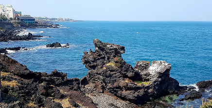
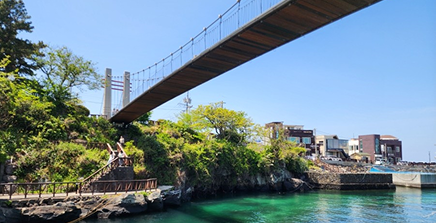
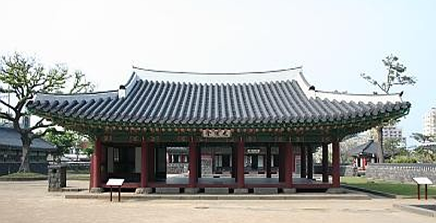
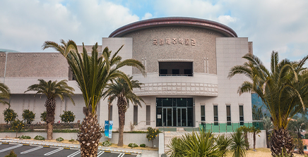

주변 관광지

용두암
제주공항 인근의 북쪽 바닷가에 있는 용두암은 오랜 세월에 걸쳐 파도와 바람에 씻겨 빚어진 모양이 용의 머리와 닮았다 하여 용두암이라 불린다. 전설에 의하면 용 한 마리가 한라산 신령의 옥구슬을 훔쳐 달아나자 화가 난 한라산 신령이 활을 쏘아 용을 바닷가에 떨어뜨려 몸은 바닷물에 잠기게 하고 머리는 하늘로 향하게 하여 그대로 굳게 했다고 전해진다.

용연구름다리
용연구름다리는 제주공항 서쪽에 위치한 다리이다. 용연은 제주시 용담동에 위치한 계곡의 물이 유입되는 하천 으로, 산등성이부터 바닷가로 흘러 바닷물과 민물이 만나 신비로움을 선사한다. 용연은 가뭄이 들어도 물이 마르 지 않아이곳에 살던 용이 승천해 비를 내리게 했다는 전설이 내려온다.

제주목 관아
제주목 관아는 조선시대 제주 지방 통치의 중심지로서, 지금의 관덕정을 포함하는 주변 일대에 들어서 있던 관아 시설을 말한다. 1991년부터 발굴 조사가 이루어져 탐라국으로부터 조선과 근대에 이르기까지 여러 시기의 유구와 문화층이 확인되었다. 특히 조선시대 관아 시설인 동헌과 내아의 건물지 등이 확인되어 제주목 관아지로 밝혀진 중요한 유적이다.

국립제주박물관
국립제주박물관은 제주의 역사와 문화에 관한 다양한 자료와 유물을 수집·보존하는 한편, 체계적인 전시와 학술 조사·연구를 목적으로 2001년 6월 15일 처음으로 문을 연 고고역사박물관입니다.